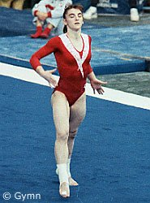

Eva Rueda (ESP)
1990 European V Bronze
Medalist
1990
World Cup V Silver Medalist

|
Medal Total
- World Cup: 1 Silver
- European Championships: 1
Bronze
|
Eva was born on September 13,
1971 in Madrid. Her coach was Jesus Carballo, and she trained at Calvo y
Muñar Rodeira Club.
Competition Results
- 1987
- Belgian Gym Masters: 4th AA
- European Championships: 19th AA
- Kraft International: 3rd AA, 2nd UB, 3rd FX, 6th B
- Madrid Grand Prix: 3rd V
- World Championships: 12th Team, 56th AA
(prelims)
-
- 1988
Blume Memorial: 1st AA, 1st B, 2nd V, 2nd FX, 3rd UB
- European Cup: 5th AA, 5th V, 6th UB, 6th FX
- French International: 8th AA
- Hungarian International: 7th AA
- Ibero-American Championships: 1st AA
- Olympic Games: 9th Team, 28th AA (prelims)
-
- 1989
- Blume Memorial: 4th AA
European Championships: 7th AA, 5th FX, 6th UB
French International: 10th AA, 4th V
- Rome Grand Prix: 5th AA
- Spanish Championships: 1st AA
- World Championships: 10th Team, 13th AA
-
- 1990
- Blume Memorial: 2nd AA
- European Championships: 4th AA, 3rd V,
4th B, 8th FX
- French International: 4th AA, 4th FX,
5th V
- Goodwill Games: 5th AA, 4th FX, 7th V
- International Championships of Romania: 3rd AA
- World Cup: 9th AA, 2nd V, 5th FX
- World Stars: 7th AA
-
- 1991
- Blume Memorial: 5th AA
- European Cup: 3rd AA, 2nd V, 2nd UB
- Kosice International: 2nd AA
- Mediterranean Games: 7th AA, 1st V, 1st UB, 1st B, 1st
FX
- Rome Grand Prix: 4th AA
- World Championships: 7th Team, 34th AA
-
- 1992
- Olympic Games: 5th Team, 32nd AA (prelims), 7th V
World Championships: 16th UB (semi-finals)
This page was last updated on February 01, 2014.
© Gymn Forum